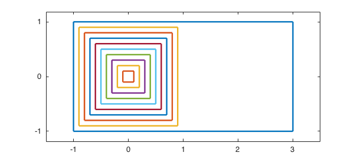
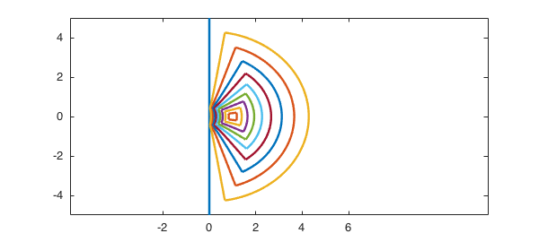
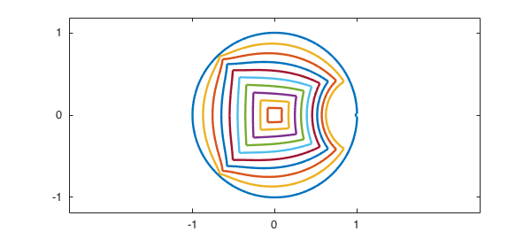

Chebfun is a convenient tool for visualizing conformal maps because it works at the level of curves rather than points. It is also a good tool for developing such maps in the sense of figuring out how to put them together. Usually a conformal map is obtained as the composition of two or three pieces, and Chebfun makes it easy to visualize each piece (and get the constants right) along the way.
For example, Olivier Sete and I were recently interested in the conformal map $f$ of an infinite half-strip to the unit disk. The half-strip consisted of all complex values $z$ with $\hbox{Re} z \ge -1$ and $|\hbox{Im} z| \le 1$. Our particular interest was in how this map would transform the unit square at the left end of the half-strip and a finite rectangle enclosing that square. Here we visualize the domain by drawing a number of concentric squares inside the area of interest. Each square is a single complex chebfun constructed with the join command, and the whole collection of squares and the outer rectangle are a chebfun quasimatrix called $Z$. This makes us able to plot the whole image with a single command, and later to conformally map it with a single command.
MS = 'markersize'; LW = 'linewidth'; s = chebfun('s');
unitsquare = join(-1i+s,1+1i*s,1i-s,-1-1i*s);
square = @(r) r*unitsquare;
E = unitsquare; E = 4*real((E+1)/2)-1 + 1i*imag(E);
Z = E; for r = .1:.1:.9, Z = [Z square(r)]; end
plot(Z,LW,1.6), xlim([-1.5 3.5]), axis equal
set(gca,'xtick',-1:3,'ytick',-1:1)

We will map the region to the unit disk in two steps, representing $f$ as the composition $f = h \circ g$. First, $g$ maps the half-strip to the right half-plane. We remember that $\sin z$ maps a vertical half-strip of half-width $\pi/2$ to the upper half-plane; similarly $\sinh z$ maps a horizontal half-strip of half-width $\pi/2$ to the right half-plane. We introduce a factor $\pi/2$ to change the half-width to $1$, and use $z+1$ so that our strip starts at real part $-1$ rather than $0$. So here is the necessary map $g$:
g = @(z) sinh(pi*(z+1)/2)/sinh(pi/2)
g =
@(z)sinh(pi*(z+1)/2)/sinh(pi/2)
As promised, a single command suffices to plot the image.
plot(g(Z),LW,1.6), axis([-4 12 -5 5]) set(gca,'xtick',-2:2:6,'ytick',-4:2:4)

Next, we map this half-plane to the unit disk by the Moebius transformation $(w-1)/(w+1)$,
h = @(w) (w-1)./(w+1) f = @(z) h(g(z))
h =
@(w)(w-1)./(w+1)
f =
@(z)h(g(z))
Another single command gives us our final map. Note that the outer curve in this next image is not the whole unit circle: there's a tiny approximately semicircular blip near $z=1$ that deviates from the unit circle, since our plots show the image of a rectangle of aspect ratio $2$ rather than the whole infinite half-strip.
hh = plot(f(Z),LW,1.6); xlim([-2.5 2.5]), axis equal set(gca,'xtick',-1:1,'ytick',-1:1)

For fun let's add conformal images of the words ``conformal'' and ''mapping'';
set(hh,LW,.5)
s = [.7i+scribble(' conformal') ; -.9i + scribble(' mapping')];
hold on, plot(f(s),'k',LW,1.6), hold off
It is interesting to plot contours of $|f(z)|$ in the original half-strip. Can you explain this image with the aid of the Schwarz reflection principle?
x = linspace(-8,8,140); y = linspace(-4,4,100); [xx,yy] = meshgrid(x,y); zz = xx + 1i*yy; contour(x,y,log10(abs(f(zz))), -.7:.05:.7), colorbar set(gca,'xtick',-1:1,'ytick',-4:4)